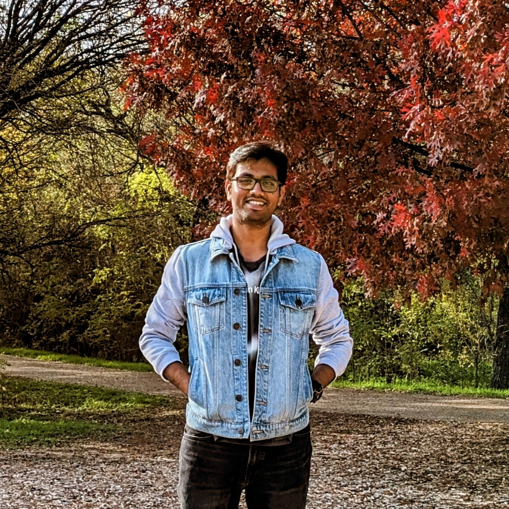

|
Sai Haneesh Allu I'm a Ph.D. candidate in Computer Science at the University of Texas at Dallas, advised by Dr. Yu Xiang in the Intelligent Robotics and Vision Lab. My research focuses on Mobile Manipulation, particularly in areas like Learning from Human Demonstrations, Semantic Mapping, and Robot Exploration & Navigation. I am interested in developing algorithms that enable robots to intelligently perceive, map, and interact with their surroundings. Previously, I completed my Masters in Control and Automation at IIT Delhi, advised by Dr. Shubhendu Bhasin and my Bachelors in Electrical and Electronics Engineering at NIT Warangal. I also co-founded VECROS Technologies where I led the development of autonomous quadrotor systems. |
 |
{kind=link}
Research |

|
HRT1: Mobile Manipulation via One-Shot Human-to-Robot Trajectory Transfer
Sai Haneesh Allu*, Jishnu Jaykumar P*, Ninad Khargonkar, Tyler Summers, Jian Yao, Yu Xiang (* denotes equal contribution) Out Soon!! Webpage / |

|
A Modular Robotic System for Autonomous Exploration and
Semantic Updating in Large-Scale Indoor Environments
Sai Haneesh Allu, Itay Kadosh, Tyler Summers, Yu Xiang Under submission to ICRA, 2026 Webpage / Code / arXiv / Video Engineered a greedy and modular Autonomous Exploration and revisiting algorithm for vast environments, with a hierarchical semantic-geometric data structure for Semantic Mapping and efficient lifelong updates. |

|
Grasping Trajectory Optimization with Point
Clouds
Yu Xiang, Sai Haneesh Allu, Rohith Peddi, Tyler Summers, Vibhav Gogate IEEE/RSJ International Conference on Intelligent Robots and Systems (IROS), 2024 Webpage / Code / arXiv / Video Formulated a point-cloud-based Trajectory Optimization framework for simultaneous grasp selection and motion planning, achieving ~66% faster performance compared to conventional OMPL based approach. |

|
SceneReplica: Benchmarking Real-World Robot
Manipulation by Creating Replicable Scenes
Ninad Khargonkar*, Sai Haneesh Allu*, Yangxiao Lu, Jishnu Jaykumar P, Balakrishnan Prabhakaran, Yu Xiang (* denotes equal contribution) International Conference on Robotics and Automation (ICRA), 2024 Webpage / Code / arXiv / Video Proposed a marker-free scene alignment technique for Benchmarking real-world robot manipulation, evaluated across 11 existing perception, planning and control pipelines over 2000 grasping trials. |

|
Formation Control of Quadcopters
Sai Haneesh Allu Master's Thesis, IIT Delhi, 2020 Code / Thesis / Video Researched and implemented Distributed Formation Control algorithms on real-world quadcopter swarm and developed a target capture mechanism using a graph-based leader-follower consensus approach. |
Industry Experience |
VECROS |
Co-Founder and CTO, 2020 – 2021, Delhi, India
Developed an edge-processed Visual Inertial Odometry system and a mapless reactive planner for GPS-denied navigation. Led the team in building a web-based BVLOS control platform using AWS IoT. Contributed to raising $100K in a seed funding round. |
Sterlite Tech |
Operations Engineer, 2016 – 2017, Maharashtra, India Investigated the optical fiber spooling process and implemented a grounding mechanism to reduce process failures. Co-authored comprehensive maintenance documentation to reduce machine downtime. |
Leadership & Service |
Workshop Organizer |
Co-organizer for the Neural Representation Learning for Robot Manipulation workshop at CoRL 2023. |
Peer Reviewer |
IROS'24, ICRA'25, '26 |
Teaching Assistant |
UT Dallas: Computer Graphics, Human-Computer Interaction, and Summer Research Program 2023 for high school students.
IIT Delhi: Stochastic filtering and system identification, Multi-agent control, Advanced Control Lab.
|
|
Website template from Jon Barron |